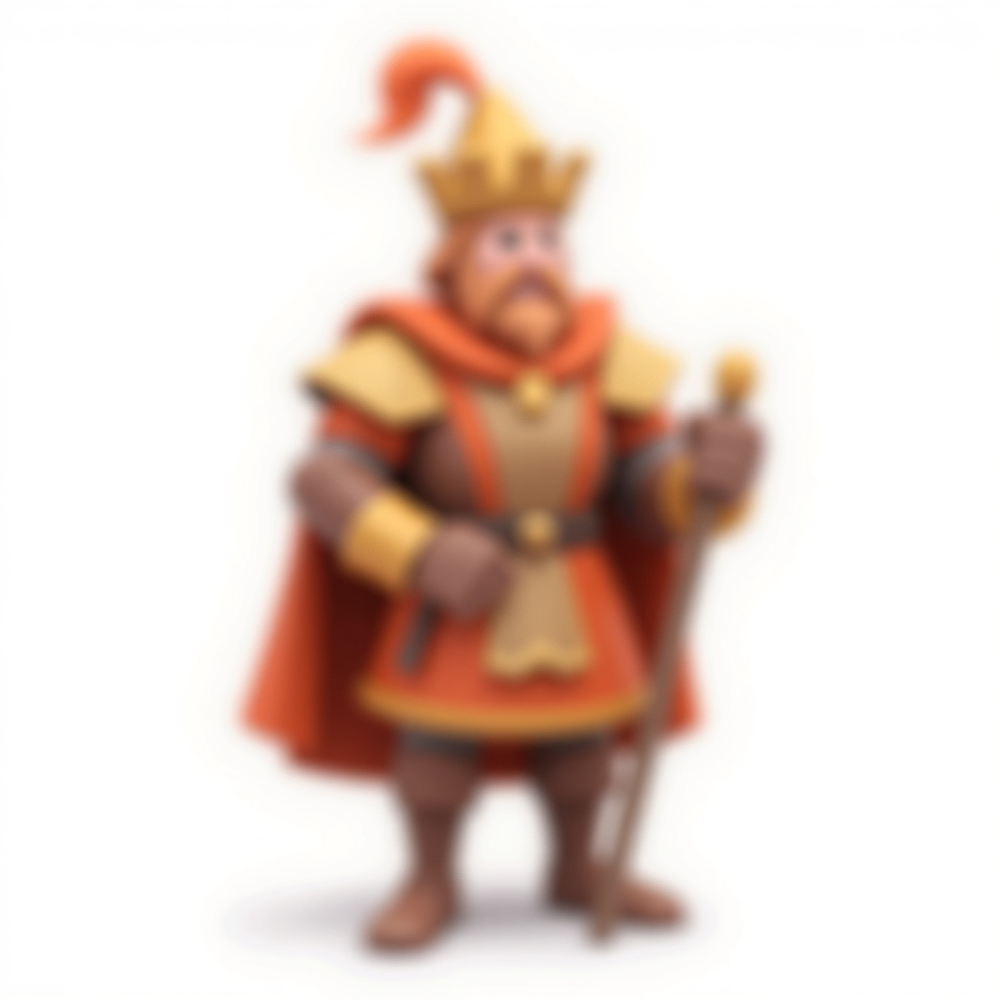
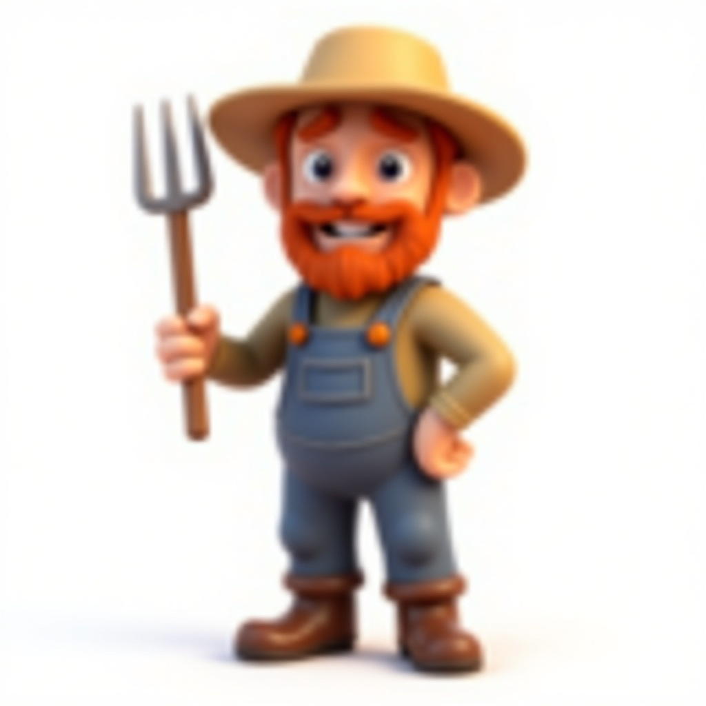

Hoe een proof of concept uitgroeide tot de meest ambitieuze browser-RTS van Nederland
4 facties525+ stemmen127 3D modellen192 testsv0.20.0
Scroll om te ontdekken
01De Oorsprong
Elk project begint ergens. Dit begon met een typo, een WarCraft-tattoo op een rug, en de vraag: kan een persoon met AI-tools een echte RTS bouwen?
"Wat als WarCraft: Reign of Chaos zich afspeelde in Brabant? Met worstenbroodjes als resources en managers die spreadsheets gooien?"
-- De vraag die alles startte, 5 april 2026
Richard Theuws -- ontwikkelaar, vader, Brabander -- zat thuis achter zijn laptop. Hij was bezig met iets anders, typte "Zu" per ongeluk, en het gesprek met Claude Code ging een onverwachte kant op. Twee game-ideeen kwamen op tafel: een GTA-achtige game met tractors, en een WarCraft-clone met Brabantse facties.
Het moest de WarCraft-clone worden. Niet omdat het makkelijker was -- maar omdat Richard een WarCraft: Reign of Chaos tattoo op zijn rug heeft staan. Sommige dingen zijn voorbestemd.
De eerste versie was ruw. Gekleurde dozen op een groen vlak. Maar het werkte: je kon eenheden selecteren, ze bewegen, een basis bouwen, gevechten voeren. Dat was genoeg om te weten dat hier iets groters in zat.
Sindsdien is het een ongoing proof of concept. Geen deadline, geen publisher, geen investeerders. Gewoon iemand die eraan werkt als hij tijd heeft -- of als hij niet kan slapen. Stap voor stap groeit het van experiment naar iets dat steeds meer op een echte game begint te lijken.
Ongoing proof of concept -- continu in ontwikkeling
02De Wereld
Het jaar is 1473. Het Gouden Worstenbroodje -- het symbool van alles waar Brabant voor staat -- is gestolen. Vier facties botsen in een strijd om cultuur, identiteit en het recht op een frikandel speciaal.
De Brabanders
"Samen staan we sterk -- en we staan altijd samen"
Gezelligheid als mechanicSterker in groepenCarnavalsrage
Boeren, cafebazen en carnavalvierders. De Brabanders worden letterlijk sterker naarmate ze dichter bij elkaar staan -- hun unieke Gezelligheid-mechanic beloont saamhorigheid met +50% stats. Resources? Worstenbroodjes en bier, uiteraard. Hun Carnavalsrage verandert een aanval in een optocht die niet te stoppen is.
Consultants, managers en hipsters met havermelk. De Randstad begint elke actie 20% trager -- bureaucratie -- maar wordt na genoeg voltooide acties sneller dan iedereen. Resources: PowerPoints en LinkedIn Connections. En elke vijf minuten pauzeren al hun gebouwen acht seconden voor werkoverleg. Herkenbaar?
Mijnwerkers, heuvelbewoners en vlaaienbakkers. De Limburgers hebben een compleet tunnelnetwerk waarmee eenheden onzichtbaar achter vijandelijke linies verschijnen. Resources: Vlaai en Mergel. Hun Mergelridder is de zwaarst gepantserde unit in het spel -- steen breekt niet.
De Belgen
"Ceci n'est pas une army" -- De Diplomaten
Diplomatiek CompromisUnit conversieChocolade als wapen
De Frietkoning en zijn leger van frituurstrijders. De Belgen zijn de enige factie met een actief diplomatie-systeem: ze kunnen vijandelijke eenheden overtuigen met chocolade, wapenstilstanden afdwingen, en gebouwen saboteren via commissies. Resources: Frieten, Trappist en Chocolade. Onderschat ze niet -- hun chaos is hun kracht.
"Vier facties, vier culturen, een slagveld. Gebaseerd op echte regionale verschillen -- maar dan met een dikke laag humor en een worstenbroodje bovenop."
-- De Verteller
03De Heroes
Acht karakters met volledige backstories, relaties, motivaties en kwetsbaarheden. Geen poppetjes -- personages met diepgang.

Prins Floris van Oeteldonk
BRABANDERS -- TANK / BUFFER
Een carnavalsprins die per ongeluk aan het hoofd van een leger staat. Vecht niet voor macht, maar voor het recht om "ge" te zeggen. Inspirerend, impulsief, en stiekem onzeker of hij goed genoeg is.
"ALAAF! ...en nu gansen we d'r tegenaan."

Henk van de Akker
BRABANDERS -- TANK / SUMMONER
Zeven generaties boer. Zijn land werd onteigend voor een Vinex-wijk. Zegt in drie woorden wat anderen in een toespraak gieten. Zijn dochter dacht dat boeren niks voorstelden. Hij bewees het tegendeel.
"De akker wacht op niemand. En ik ook nie."
Victor van der Berg
RANDSTAD -- COMMANDER / BUFFER
CEO van de Randstad Ontwikkelingsmaatschappij. Opgegroeid in Wassenaar met zes badkamers en geen warmte. Stal het Gouden Worstenbroodje als "strategische acquisitie." Begrijpt alles behalve waarom mensen feesten.
"Niets persoonlijks. Alleen kwartaalcijfers."
Herman Veerstra
RANDSTAD -- CASTER / MANIPULATOR
De Politicus. Record: 47 verkiezingsbeloften in een campagne, nul nagekomen. Geen slecht mens -- een zwak mens. De CEO's handpop die denkt dat hij een partner is. Zijn wapen? Letterlijk retoriek: gloeiende letters die vijanden treffen.
"Ik beloof u -- en dit meen ik echt deze keer..."
De Mijnbaas
LIMBURGERS -- TANK / CONTROLLER
Heerst over het tunnelnetwerk onder Limburg. Spreekt weinig maar als hij spreekt, beeft de grond. Zag zijn mijnen sluiten. Groef verder. De Mijnbaas vertrouwt alleen de steen en de stilte.
"Gluck auf... veur dich is 't aafgeloupe!"
De Maasmeester
LIMBURGERS -- CASTER / DISRUPTOR
Mysterieus als de Maas zelf. Controleert water en mist. Niemand weet precies waar hij vandaan komt of hoe oud hij is. Zelfs de Mijnbaas behandelt hem met voorzichtigheid.
"De vloed komt!"
De Frietkoning
BELGEN -- TANK / SUPPORT
Zijn Koninklijke Portie geneest en versterkt bondgenoten tegelijk. Kibbelt eindeloos met de Prins over frieten versus worstenbroodjes, maar zou zonder twijfel voor hem sterven.
"In naam van de Gouden Friet!"
De Abdijbrouwer
BELGEN -- MONK / CASTER
Brouwt bier dat wonderen doet. Spreekt in raadsels. De CEO ziet geen waarde in een monnik die bier brouwt -- en dat is precies waarom de Abdijbrouwer gevaarlijk is. Zijn Laatste Avondbrouwsel is het krachtigste ultimate in het spel.
"De waarheid zit in de tweede gisting."
"Elke hero heeft een backstory, een motivatie, een zwakte. Ze zijn geen poppetjes die schreeuwen als je erop klikt. Het zijn personages die je herkent, om wie je geeft, en die soms iets zeggen waar je even stil van wordt."
-- Scenario Writer Agent
04Hoe het werkt
Een persoon. Een leger AI-tools. En een pipeline die van een tekstbeschrijving naar een geript, geanimeerd, gestemd 3D model gaat in minder dan twee minuten.
CODE
Claude Code
Architectuur, game logic, AI
3D
Meshy Studio v6
127 3D modellen
RIG
Blender CLI
Auto-rig + animatie
STEM
ElevenLabs
525+ stemmen in 4 dialecten
MUZIEK
Suno
Soundtrack per factie
De tools achter het koninkrijk
Claude Code
De ruggengraat. 7 gespecialiseerde agents werken parallel: Asset Generator, Audio Director, 3D Animation Director, Scenario Writer, Game Deployer, Game Analyzer, en een meta-agent die het hele proces evalueert en verbetert.
Meshy Studio v6
3D modellen van tekst naar game-ready GLB. 127 modellen -- units, gebouwen, props -- via de directe API met 20 parallelle generatietaken. Elke factie herkenbaar aan silhouet en kleur, zelfs op RTS-zoomniveau.
Blender CLI Auto-Rig
Een 17-bone humanoid armature, distance-based weight painting, en 7 animatiesets per unit-categorie. Volledig geautomatiseerd via de command line -- geen handmatig werk. Van statisch model naar lopende, vechtende, stervende eenheid.
ElevenLabs
525+ voice lines in vier dialecten: Brabants ("ge", "hedde", "nie"), Limburgs ("ich", "dich", "jao"), Vlaams ("amai", "allez", "goesting"), en ABN voor de Randstad. Elke unit-type heeft een eigen persoonlijkheid via unieke voice settings.
Suno
Factie-specifieke muziek met een dynamic battle intensity systeem. De muziek reageert op wat er op het slagveld gebeurt -- van rustige economische opbouw tot epische veldslagen.
Eerlijk over kosten
Dit alles kost honderden euro's per maand. Claude Code tokens, ElevenLabs, Meshy, fal.ai, Suno, hosting op een Mac mini M4 server. Het is een passieproject met serieuze lopende kosten.
"Het is een experiment in wat een solo developer kan bouwen als je AI als gereedschap behandelt in plaats van als vervanging. De AI genereert modellen, stemmen en muziek. Maar het creatieve DNA -- de humor, de balans, de ziel -- dat komt van een mens."
-- Richard Theuws
05De Reis
Van een typo tot een speelbare RTS met vier facties, 25 campaign missies, en meer dan 33.000 regels code. Dit is hoe het groeide.
5 april 2026
De Vonk
Een typo. Een brainstorm. Twee game-ideeen op tafel. De keuze valt op een WarCraft-clone in Brabant. Binnen een paar uur staat de eerste PRD: 1200+ regels game design met vier facties, alle units, gebouwen, en een 12-missie campaign.
5 april 2026
De Eerste Proof of Concept
Vijf parallelle AI agents bouwen de core engine: Three.js renderer, bitECS, terrein, camera, pathfinding. Het terrein verschijnt op 121 FPS. De eerste gekleurde dozen bewegen over het scherm. Het leeft.
5-6 april 2026
Van Dozen naar Game
Meshy 3D modellen vervangen de dozen. De Gezelligheid-mechanic werkt. De eerste ElevenLabs stemmen klinken door de speakers. Campaign missies 1-9 worden gebouwd. De game push naar GitHub.
6-7 april 2026
Vier Facties, Vier Campaigns
Limburgers krijgen hun tunnelnetwerk. Belgen hun diplomatie-systeem. Randstad hun corporate campaign "De Grote Overname." Alle vier facties zijn speelbaar met eigen units, gebouwen, tech trees en stemmen.
Dashboard herontwerp. Building interface cards. 8 Meshy v6 gebouwmodellen. Hero character sheets voor alle 8 personages. Campaign narrative verdieping. Voice Studio met 551 voice lines. Donatie-integratie via Mollie. 192 tests groen.
Nu en verder
De Volgende Stap
Echte stemacteurs voor de factie-leiders. Meer campaign missies. Map variatie met rivieren, bruggen en tunnels. Multiplayer als de community groot genoeg is. Dit is pas het begin.
06Waar het naartoe gaat
Dit is wat er al staat. Stel je voor wat er nog kan komen.
Wat er al is
4 speelbare facties
Elk met eigen units, gebouwen, tech tree, stemacteurs, en unieke mechanics. Geen reskins -- vier compleet verschillende speelervaringen.
39
Unit types
41
Gebouwen
8
Heroes
25 campaign missies
Vier verhaalllijnen: van een boer in Reusel tot de Slag om de A2, van de eerste Vergadering tot de Boardroom Beslissing. 15-20 uur geschatte speelduur.
12
Brabanders
5
Limburgers
8
Rand+Belg
Skirmish modus
Speel tegen de AI op 4 map templates. Kies je factie, kies je tegenstander, kies je kaart. De AI past zijn strategie aan per factie.
4
Templates
4
AI facties
3
Moeilijkheid
525+ voice lines
In vier dialecten via ElevenLabs. Brabants, Limburgs, Vlaams, en Standaard Nederlands. Elke unit heeft een eigen persoonlijkheid.
4
Dialecten
525+
Lijnen
12
Stemmen
Wat er nog komt
Echte stemacteurs
De AI-stemmen zijn een goed begin, maar de nuances van een Tilburgse boer of een Limburgse mijnwerker kun je niet faken. Echte native speakers voor de factie-leiders en hero characters.
Multiplayer
1v1 en 2v2 via WebSockets. Gehost op de Mac mini M4 server. Lobby systeem, matchmaking, en spectator mode. Speel tegen je vrienden -- of tegen vreemden.
Meer facties
Zeeuwen, Friezen, Tukkers -- de community bepaalt wie er als volgende komt. Compleet met eigen units, gebouwen, tech tree, stemmen en campaign missies.
Grotere maps en meer missies
Maps tot 512x512 met meerdere eilanden, bruggen en verborgen paden. Nieuwe campaign arcs. Map obstacles, tunnelsystemen, en epische veldslagen op nog grotere schaal.
AI Cinematics
Cinematische cutscenes gegenereerd met AI, zoals de WarCraft III intro's. Tussen missies, bij story moments, bij epische veldslagen. Een preview van vijf seconden staat al op de Steun pagina.
Professionele soundtrack
De Suno-muziek aangevuld met orkestrale thema's per factie. Battle music die meebeweegt met de intensiteit van het gevecht. En een main theme dat je drie dagen in je hoofd zit.
Kies je factie. Word deel van het verhaal.
Reign of Brabant is gratis en blijft gratis. Maar de AI-tools, hosting en toekomstige features kosten honderden euro's per maand. Met jouw steun wordt dit project sneller, groter en mooier. Stem een karakter in, ontwerp een missie, of gooi er gewoon een worstenbroodje bij.
"Ik bouw dit sowieso. Maar met jullie erbij bouw ik het sneller, groter, en mooier. Elke bijdrage geeft je iets echt -- geen stickers, geen bedankkaartjes. Echte invloed op de game die je speelt."
-- Richard Theuws, solo dev, Brabander, eigenaar van een WarCraft tattoo